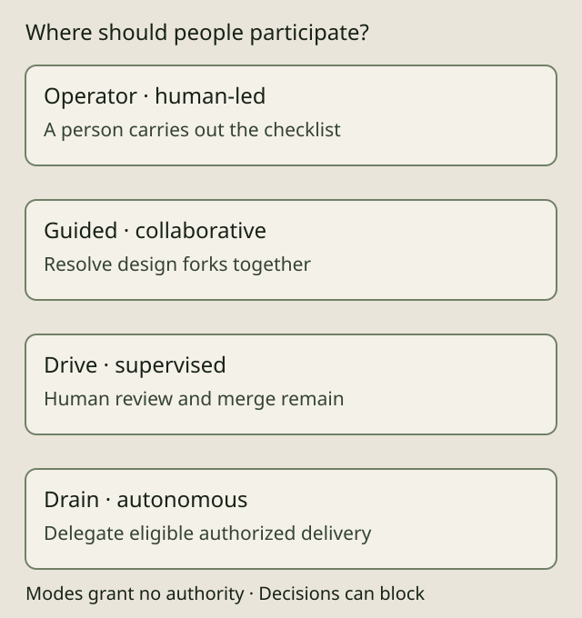

THE GOVERNED SOFTWARE FACTORY
Choose where people take part

AIDA is a governed software factory with selectable autonomy. The choice is made per spec, so the same project can keep sensitive design interactive while delegating approved routine work. People still set intent and acceptance criteria, develop collaboratively and decide how much authority to grant.
Four delivery choices
- Human-led — operator: AIDA presents a checklist and stops. A person performs the work; the mode does not launch an implementation agent.
- Collaborative — guided: a person and agent resolve recorded design forks in an interactive session, then the person reviews the resulting PR. The mode does not auto-merge.
- Supervised — drive: agents implement, open a PR and proceed through CI, then stop for the human's review and merge.
- Autonomous — drain: agents implement, run CI, independently review, merge through applicable gates and pull. Eligible authorized work proceeds without routine human coding or code review. Exceptions stop for triage.
Autonomous delivery is AIDA's dark factory mode. It removes routine human intervention from the execution path for work that is eligible and authorized. It does not grant authority, resolve product decisions, promise every task will succeed or deploy software to production. Whether a whole organization operates without routine intervention depends on how it assigns work and handles exceptions.
The interactive selector on the autonomy page is generated from the same bounded selector used on the product landing page. Delivery labels are descriptions; the stored values are the execution modes above. Keyboard users can use arrow keys, Home and End. Without JavaScript, the initial autonomous explanation remains readable.
Decisions are a separate block
decide sits outside the delivery ladder. A pending decision blocks dispatch; a one-shot mode override cannot bypass it, even with --force. Resolve the decision before dispatching the work again.
For the four delivery modes, the increasing human-involvement order is drain, drive, guided, operator. aida do --mode is a one-shot override. Moving toward more human involvement is allowed; moving toward less requires --force. The override is not persisted. A durable mode change uses the documented spec-edit surface and its authority checks. Neither kind of change grants a role or bypasses review, CI or holds.
Pair autonomy with trust
Execution mode describes the human contract; authority determines whether a particular action may proceed. Read trust and evidence before treating autonomous dispatch as permission to integrate. Harness features, model/effort controls and containment differ; use the configuration guide to inspect the actual launcher.
The getting-started guide requires no autonomous delivery. The workflow guide shows how intent survives for maintenance and collaboration. AIDA is alpha software and supports Linux only.
Source and inspection
The stored variants and ordering are in ExecutionMode; human contracts and one-shot override classification are in dispatch. aida do --help documents the current flags. This page changes no execution or authority behavior.
03 / SELECTABLE AUTONOMY
ONE PROJECT. DIFFERENT LEVELS OF DELEGATION.Choose where
people stay in the loop.
Run a dark factory for bounded work. Keep people close to consequential decisions. Choose the execution mode per spec.
DARK FACTORY MODE
Delegate the lifecycle.
Agents implement, test, independently review and merge approved, authorized work. People set the intent, acceptance criteria and limits. Exceptions escalate.
A bounded fix with clear acceptance criteria and no unresolved design decision.
- Define intent & limitsHuman
- Implement & testAgent
- Independent reviewAgent
- Merge through gatesAgent
Routine human coding and code review are removed from the execution path. Review, CI and authority gates remain.
Some work needs a decision first. decide blocks execution until the pending decision is resolved. It sits outside the autonomy ladder.